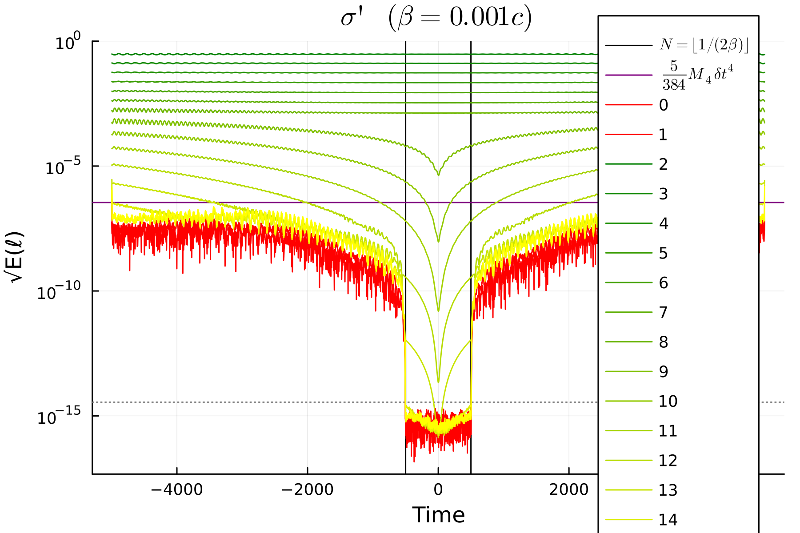
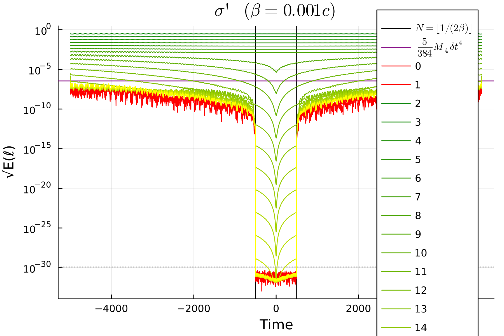
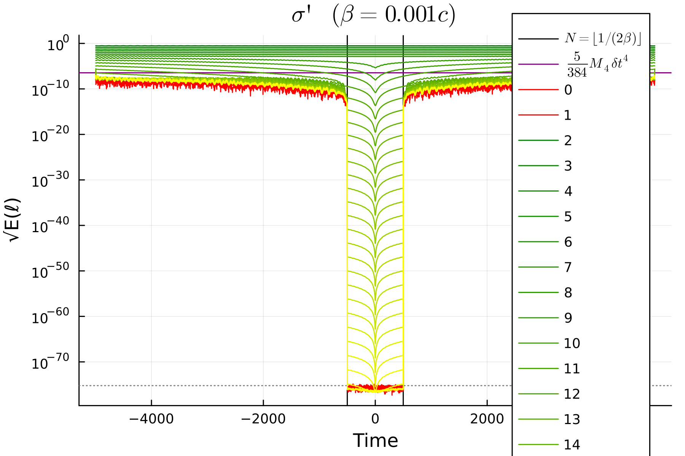

Spline Errors
Given tabulated gravitational-wave data sampled at discrete retarded times, BMS transformations (other than simple time shifts or rotations) involve changing time slices, thus requiring interpolation to evaluate the waveform in a given direction at the appropriate time. But if the interpolation is not globally smooth, the resulting function on the sphere will have a spatial discontinuity at some finite order of tangential derivative, which in turn causes the SWSH expansion to converge only algebraically, with a persistent power-law floor in the truncation error as $ℓ_\text{max}' → ∞$. Here, we quantify this effect for B-spline interpolation, which is commonly used in numerical-relativity waveforms.
A B-spline of order $n$ (polynomial degree $n-1$, so the familiar cubic spline is order 4) achieves $C^{n-2}$ continuity at knots, and $C^∞$ continuity between knots, with interpolation error bounded by $O(Mₙ (δt)^n)$ where $Mₙ = \max|H⁽ⁿ⁾|$ is the largest magnitude of the $n$-th derivative of the function being interpolated [38, 39].
Within any single spline interval all sky directions $k̂$ require rest-frame times from that same cubic (or degree-$(n{-}1)$) polynomial, so the function $f(k̂) = H_\text{spline}\left(t' κ^{-1}(k̂)\right)$ on the sphere is a polynomial composed with the smooth Doppler factor $κ^{-1}(k̂)$, hence analytic, and its SWSH expansion converges exponentially. Once different sky directions require times from different spline intervals, however, the angular function acquires a $C^{n-2}$ kink — a jump in the $(n-1)$-th tangential derivative — along the level-set curve ${t' κ^{-1}(k̂) = t_k}$ on $S²$. For a boost of speed $β$ this transition first occurs when $2β|t'| > δt$, i.e., after only $N_\text{good} ≈ ⌊ 1/(2β) ⌋$ time steps from the retarded-time origin. An additional supertranslation of peak-to-peak amplitude $Δα$ reduces this to $N_\text{good} ≈ \max(0, ⌊ (1 - Δα/δt)/(2β) ⌋)$.
It's worth pausing for a moment to remark on this unusual relation: for a simple boost, the number of time steps away from $t=0$ that can be accurately represented is determined by the boost. This is a discrete number being given by a continuous parameter, and is independent of the coarseness of the time sampling. The really remarkable thing is how precisely this relation is borne out in practice, with a discontinuous jump in the error at the predicted time step, regardless of the characteristics of the system being transformed. This number is further reduced by any supertranslation, in a way that does depend on the time sampling.
The spectral consequences of the kink follow from the same argument as for Fourier series. A function on $S²$ whose $p$-th derivative is discontinuous along a curve[curve] has energy spectrum $E(ℓ) ∼ ℓ^{-2(p+1)}$, where energy is defined as the sum of the squares of the SWSH coefficients at each $ℓ$:
\[E(ℓ) = \sum_{m=-ℓ}^ℓ |f_{ℓm}|^2.\]
This is the result of Livermore [40]. The "energy spectrum" there is the square root of ours, so the law $ℓ^{-(p+1)}$ found there is our $E(ℓ) ∼ ℓ^{-2(p+1)}$. For an order-$n$ B-spline the jump is in the $(n-1)$-th derivative, giving
\[E(ℓ) ∼ ℓ^{-2n},\]
which is $E(ℓ) ∼ ℓ^{-8}$ for cubic splines ($n = 4$).
This tail decays quickly, and it is not what limits the accuracy in practice. The limit is the size of the interpolation error itself. Once the kinks appear, the high-$ℓ$ modes no longer converge to roundoff, but stop at a floor comparable to the pointwise error of the spline, which for a cubic spline is at most $(5/384) M₄ (δt)^4$ [41].[ends] This floor can't be beaten by raising the precision of the number type used in the calculation, and raising $ℓ_\text{max}'$ lowers it only slowly; it behaves like the persistent error of the Gibbs phenomenon [42]. Using higher-order splines lowers the floor as $Mₙ(δt)^n$, but convergence requires $ω_\text{max}\,δ t < 1$ (all frequencies sampled above Nyquist), and for numerical-relativity waveforms the effective upper frequency is close to Nyquist, limiting practical improvement.
It is possible to test exponential convergence by using a globally smooth interpolant, such as a Chebyshev expansion, which is not piecewise-defined and thus has no knots. In fact, this has actually been done using a much older version of this code, obtaining exponential convergence throughout the entire time domain. However, Chebyshev expansions are not well suited to tabulated data because between the data points they can have large and unphysical oscillations. The constructed functions are better thought of as representative of gravitational waveforms exclusively for testing purposes, rather than representing true physics.
Example
Here, we demonstrate these effects using a simple test waveform boosted to $\beta = 0.001c$. The test waveform is given by
\[σ_{ℓ,m} = \begin{cases} Ω^{ℓ/3} \exp\left(-i m Ω t\right) & 2 \leq ℓ \leq 8, \\ 0 & \text{otherwise}, \end{cases}\]
with $Ω ≈ 0.05$, $v = ∛Ω$, and sampling of $δt ≈ 1$. The $Ω^{ℓ/3}$ is chosen to very roughly correspond to the post-Newtonian scaling, and the phase corresponds to rigid rotation with constant frequency $Ω$ chosen to be below the Nyquist frequency even up to $ℓₘₐₓ=16$. Note that we can directly evaluate
\[M₄ = \max_{ℓ} \left\{v^ℓ (ℓ Ω)^4\right\} ≈ 2.7 × 10^{-5},\]
so we can estimate the cubic spline's pointwise error bound as
\[(5/384) M₄ (δt)^4 ≈ 3.5 × 10^{-7}.\]
The "good" region is delimited with a pair of vertical bars. The plot shows the square root of the energy spectrum, $\sqrt{E(ℓ)}$, of the transformed $σ'$ components. The modes with $2 ≤ ℓ ≤ 8$ are roughly constant in time and converge exponentially with increasing $ℓ$, as expected. Modes with $ℓ > 8$ converge very quickly to machine precision at $t=0,$ but increase in both directions from there, roughly linearly with time. Again, this is the expected analytical behavior. The modes with $ℓ ≥ 14$ are initially at about $5 × 10^{-16}$, significantly below their expected error bound of $ℓₘₐₓ ϵ$ (where $ϵ ≈ 10^{-16}$ is machine precision), but beyond $N_\text{good} = ⌊ 1/(2β) ⌋$ they immediately jump up past the resolved $ℓ=13$ mode, and keep rising until they reach a plateau. By $|t| ≈ 3000$ the noise is oscillating around $10^{-7}$. This is somewhat below the cubic spline's pointwise error bound of $3.5 × 10^{-7}$ — in line with our expectations for an upper bound. The horizontal line in each plot marks that bound.
Note that the $ℓ=0$ and $1$ modes shown in red would analytically be zero, but are retained for diagnostic purposes. These are the $\xi$ quantities described in the explanation of the SSHT. The fact that they are smaller than any other modes is a good consistency check that the algorithm is working as expected, even when we run into the spline limitation.

Now, it is in any good researcher's nature to push back, and ask questions about easy ways to get around this limitation. The obvious first things that might come to mind for the skeptic are typically
- Reduce the time step $δt$.
- Increase $ℓ_\text{max}'$.
- Use higher-precision numbers.
Reducing the time step can indeed help, though it is not always possible to reduce the time step — as, for example, when the waveform comes from a numerical simulation. Moreover, it only helps relatively slowly; even a factor of 2 reduction in $δt$ can be very expensive to obtain, but will only reduce the error by a factor of 16 — which is still a relatively large number, and will not reasonably reduce the error anywhere close to the truncation level seen near $t=0$.
Increasing $ℓ_\text{max}'$ helps, but only slowly. For $3000 < |t| < 4800$, the top modes of the plateau sit at about $10^{-7}$ with $ℓ_\text{max}' = 16$, $5 × 10^{-8}$ with $ℓ_\text{max}' = 24$, and $8 × 10^{-9}$ with $ℓ_\text{max}' = 35$. Part of that improvement comes simply from no longer folding the unresolved higher modes onto the top modes, which are always slightly raised by that pile-up. Within a single run, the modes decrease with $ℓ$ only up to a point, and then level off into a nearly flat floor, rather than continuing to fall as the $E(ℓ) ∼ ℓ^{-8}$ tail would. With $ℓ_\text{max}' = 35$, that floor is at about $10^{-9}$ for $1500 < |t| < 3000$ and about $7 × 10^{-9}$ for $3000 < |t| < 4800$ — still seven or eight orders of magnitude above the roundoff level of Float64.
Finally, the structure of these spline-induced errors is the same regardless of the precision of the numbers being used. Julia makes it easy to use higher-precision numbers, so we can test this with two different precisions: the Double64 type which has $ϵ ≈ 10^{-32}$, and the arbitrary-precision BigFloat type which (by default) has $ϵ ≈ 10^{-77}$. The results are shown in the plots below. In both cases, we have to increase $ℓ_\text{max}'$ to obtain full convergence to the respective $ℓ_\text{max}' ϵ$: to $ℓ_\text{max}' = 24$ for Double64, and to $ℓ_\text{max}' = 35$ for BigFloat. Near $t=0$, the modes do indeed converge nicely, down to about $10^{-31}$ and $10^{-75}$, respectively. However, exactly at the expected distance from $t=0$, the modes again jump up to a plateau. That plateau is lower than in the plot above, but only because of the higher $ℓ_\text{max}'$: a Float64 run at the same $ℓ_\text{max}'$ gives the same plateau as the Double64 or BigFloat run, mode for mode, to two significant figures. The plateau is determined by the spline interpolation error and the band limit, and not at all by the numerical precision.
The last plot is truly remarkable. It shows that even with 75 orders of magnitude of precision, we still have just 7 or so digits of accuracy throughout most of the waveform. It shows that even with much higher $ℓ_\text{max}'$, the modes still pile up right under the plateau at the same level. And it shows that the transition between convergence to machine precision and convergence to the plateau is at exactly the predicted time, independent of time step, band limit, or numerical precision.
It is worth repeating that — assuming we are using cubic splines — the plateau is only weakly dependent on the time step, and is entirely independent of the numerical precision and the band limit. The main thing we buy by increasing the precision or band limit is that we can resolve the modes down to roughly machine precision near $t=0$. And even this benefit disappears whenever we have a nontrivial supertranslation (other than a pure time offset).


- curveThat is, the set of points at which the function is discontinuous form a curve — rather than being at an isolated point, for example. The kinks here lie along curves on the sphere. A discontinuity at a single point would give a faster decay, $E(ℓ) ∼ ℓ^{-(2p+3)}$, in the notation used here [40].
- endsStrictly, the bound of Hall and Meyer is for a spline that matches the function's slope, or its second derivative, at the ends of the interval. The natural spline used here sets the second derivative to zero at the ends instead, which adds an error there that dies away within a few intervals.